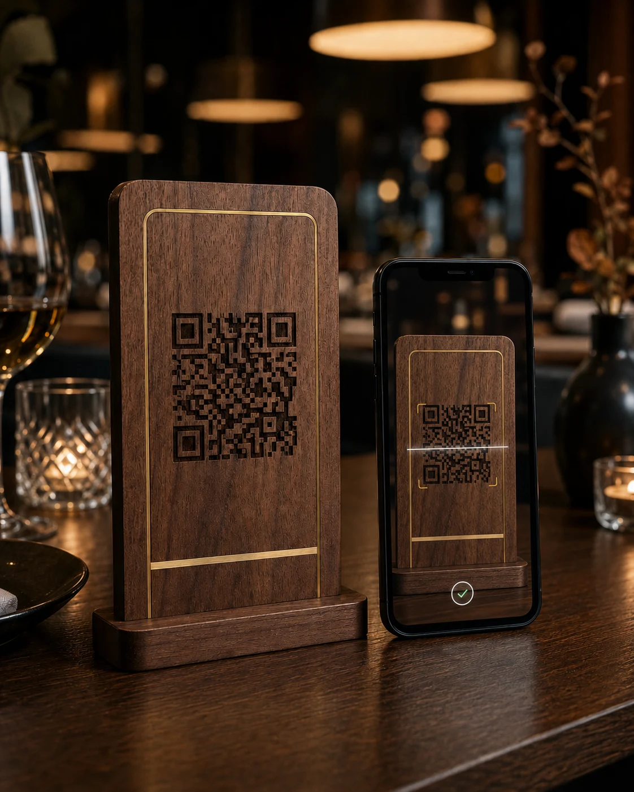
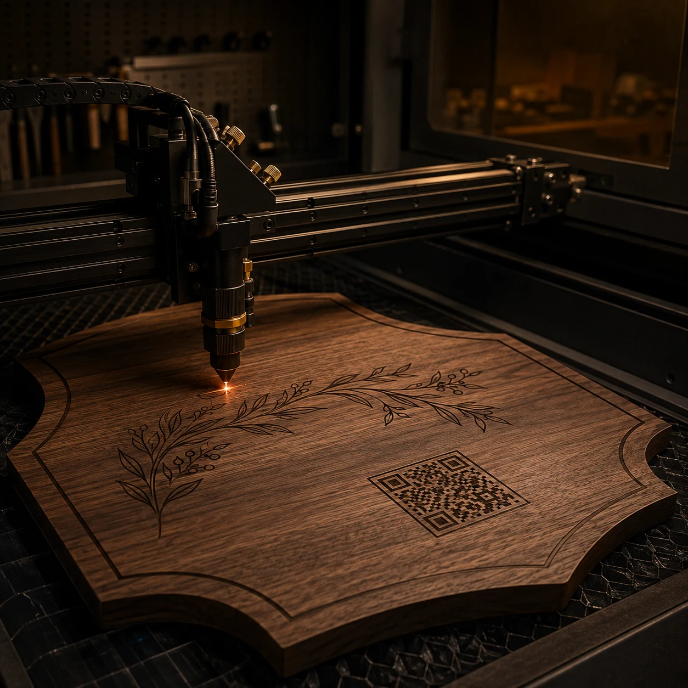

Präzise Verarbeitung
Millimetergenaue Ergebnisse mit moderner Lasertechnik.
PREMIUM BUSINESS SIGNAGE · MADE IN BERLIN
Individuelle Lasergravuren, hochwertige Geschäftsausstattung und maßgeschneiderte Lösungen für Unternehmen, Gastronomie und Hotellerie.

Millimetergenaue Ergebnisse mit moderner Lasertechnik.
Ausgewählte Materialien für langlebige Qualität.
Maßgeschneiderte Lösungen passend zu Ihrer Marke.
Direkte Abstimmung von der Idee bis zum Produkt.
Kurze Wege und Fertigung direkt in Berlin.
UNSERE LEISTUNGEN
Ob Gastronomie, Hotellerie, Einzelhandel oder Unternehmen – wir entwickeln hochwertige, individuelle Produkte, die Eindruck hinterlassen und Ihre Marke stärken.
Reserviert-Schilder, Tischaufsteller, Menükarten, Zimmernummern und individuelle Ausstattung.
Hochwertige Gravuren auf Schiefer, Holz und weiteren Materialien für professionelle Präsentation.
Individuelle Geschenkideen und personalisierte Produkte für besondere Momente.
Hochwertige QR-Aufsteller verbinden Ihre Marke direkt mit Speisekarten, Bewertungen und digitalen Inhalten.
Individuelle Deko-Elemente für ein stilvolles Ambiente und einen bleibenden Eindruck.
Ihr eigenes Marketing-Team mit 5 KI-Agenten. Eine frei benennbare KI-Leitung koordiniert Kai, Emma, Luna, Leo und Nova – für Social Media, Texte, Design, Reputation und Wachstum.
UNSERE SOFTWARE-LÖSUNGEN
Smart QR verwandelt jeden Scan in ein digitales Gästeerlebnis. Growth AI nutzt die daraus entstehenden Signale, um Marketing planbar, persönlich und messbar weiterzuentwickeln.
Smart QR verbindet einen hochwertig gravierten QR-Aufsteller mit einer individuellen Restaurant-Landingpage und einem eigenen Kunden-Dashboard. Inhalte lassen sich zentral pflegen, während Gäste ohne App sofort alles Wichtige erreichen.
Smart QR anfragen
Growth AI lernt Restaurant-DNA, Markenstimme, Ziele und Regeln Ihres Betriebs. Eine frei benennbare KI-Leitung koordiniert fünf spezialisierte Agenten und verbindet Marketingarbeit mit echten Signalen aus Smart QR, Guest Journal und verbundenen Plattformen.
Growth AI kennenlernenFÜR GASTRONOMIE & HOTELLERIE
Vom ersten Blick auf den Tisch bis zur digitalen Speisekarte: Wir verbinden hochwertige Materialien mit präziser Gravur und einem Design, das zu Ihrem Betrieb passt.

WARUM JL LASER & CUT SOLUTIONS?
Wir verbinden moderne Lasertechnologie, hochwertige Materialien und sorgfältige Verarbeitung zu individuellen Lösungen für Ihr Unternehmen.
✓ Präzise Fertigung für saubere Ergebnisse
✓ Individuelle Beratung & maßgeschneiderte Lösungen
✓ Hochwertige Materialien und sorgfältige Verarbeitung
✓ Direkte, persönliche Abstimmung
✓ Fertigung in Berlin
SO EINFACH GEHT'S
Sie senden uns Ihre Idee, Maße, Logo oder Vorlage.
Wir stimmen Material, Design und Ausführung mit Ihnen ab.
Sie erhalten die Gestaltung zur Abstimmung.
Wir produzieren präzise und mit Liebe zum Detail.
Abholung in Berlin oder Versand nach Vereinbarung.
KONTAKT
Ob Einzelstück oder größere Ausstattung – erzählen Sie uns von Ihrem Projekt. Wir beraten Sie persönlich und unverbindlich.
STANDORTDong Xuan Center
Herzbergstraße 128
Halle 1, Raum 113
10365 Berlin
GESCHÄFTSFÜHRERJony Ngo
TELEFON / WHATSAPP0178 4806907
E-MAILjonyngo@jlsolutions.info
Angebot anfragen